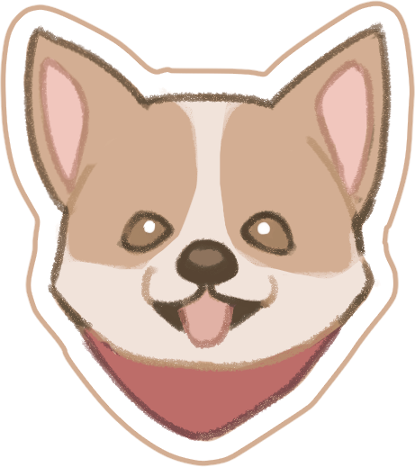
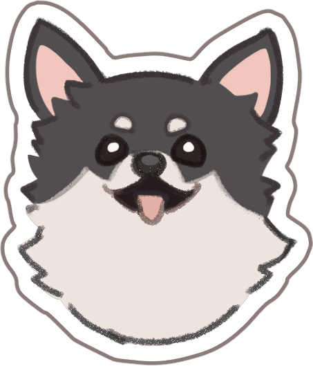
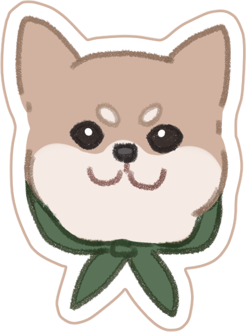
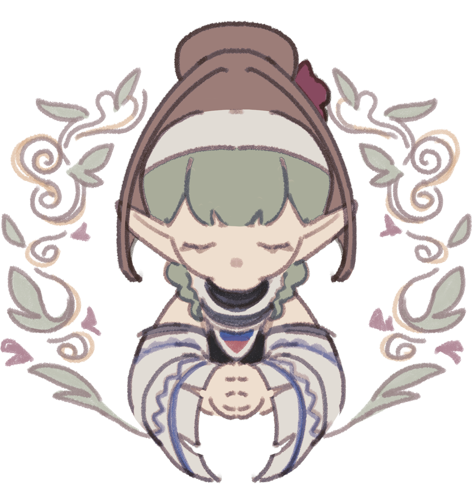
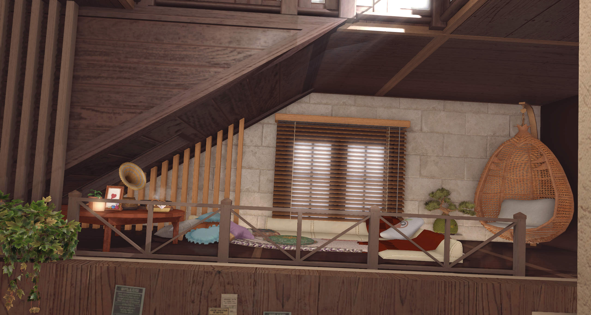
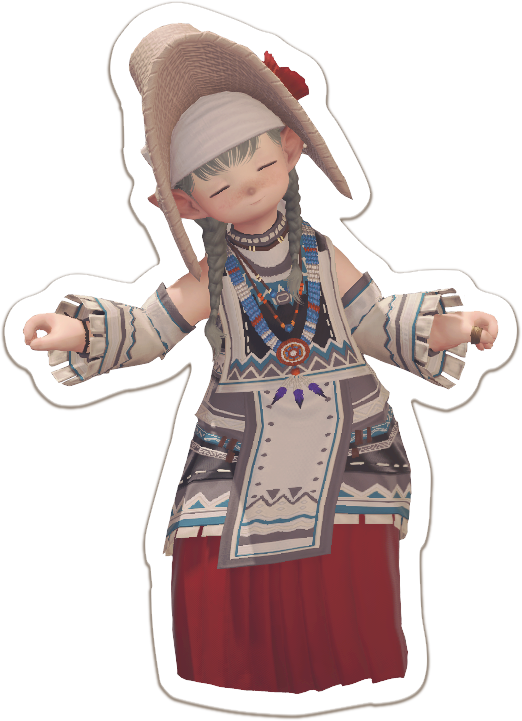

NO · 01
吃芒狗店長兼店狗
owner · roaster
樂於當小狗的拉拉菲爾族。




2026 年的春天，畝湯在穹頂皓天的一角悄然萌芽。 店長身為一隻厲害又驕傲的小狗，想為每一位到訪的朋友，打造一個能安心卸下疲憊、舒緩肩膀的溫暖避風港。
為了守護這份安靜的空間，目前店內優先採預約制（另會在招募期間開放營業）。但願這座小小的咖啡廳，能成為溫柔接住你、療癒你的一方天地。
— 店主 吃芒狗為了讓每位客人都能舒服地慢慢來，
幾個小小的約定想先跟你說 ✿
一杯飲品或一份餐點皆可。
為了讓每一位夥伴都能享有舒適寧靜的時光，在室內走動時，請協助我們盡量開啟走路模式，避免奔跑或大幅度的跳躍跑動喔。
若有合照或較親密的互動需求，請先詢問店員，並保持適當的社交距離。
owner · roaster
樂於當小狗的拉拉菲爾族。
pastry chef
把每一個早晨揉進酥皮裡。

DAILY MENU滑嫩煎蛋，包裹乳酪與鮮美蕈菇。
將長頸駝肉與野菜放在一起燉製而成。
用扁桃奶油燒制的月牙形甜麵包。
用薄薄的面皮捲起蘋果肉，烤製後便可食用。
檸檬味的烤製點心。
庫爾札斯茶葉與犛牛奶煮成的伊修加德風味奶茶。
醇濃巧克力 × 清爽比例調配。
濃郁蛋香 × 鮮乳 × 慢火溫熱，口感醇厚。
具有微甜味道的健康茶品。
總而言之就是用肝努力畫畫！

